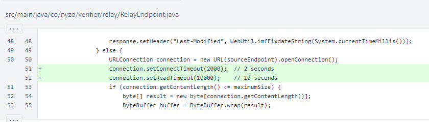
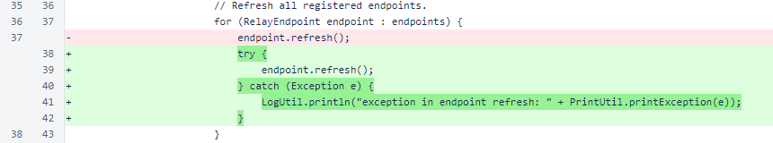

Nyzo version 585 (commit on GitHub) improves the operation of the relay server.
This version affects the relay server only.
This version is due to some issues that arose on relay0.nyzo.co and relay1.nyzo.co. The refresh loops on those servers became frozen, causing them to deliver stale data.
In RelayEndpoint.refresh(), the connect timeout and read timeout are now set on the URLConnection. The endpoints are refreshed in a loop. Previously, a single connection could stall the loop and effectively disable refreshing of all endpoints.
In the main loop of RelayEndpointManager, the refresh of each endpoint is now wrapped in a try/catch block. This ensures that an exception refreshing an endpoint does not cause problems outside that particular refresh operation.
